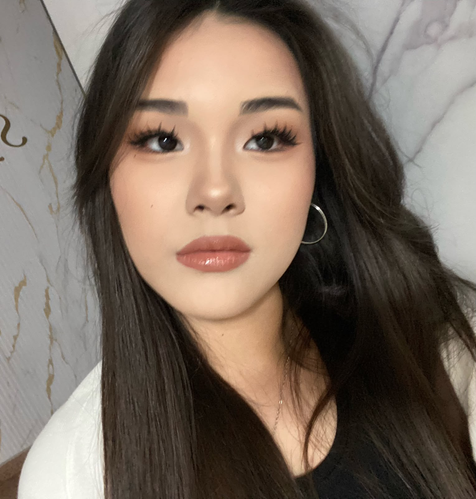

Yerkezhan Balagazinova Kanatovna
Group: Se-2527
21.05.2008
My name is Balagazinova Yerkezhan.I'm 18 years old. Im studying at AITU to become a software engineer.
In my free time, I like to watch volleyball matches and figure skating competitions.
I studied at four different schools in Astana. They are:
My favourite subjects were: